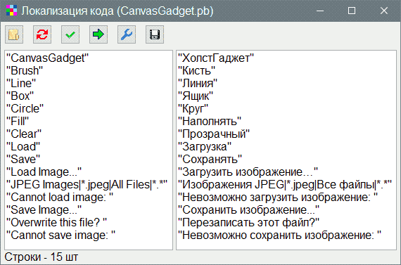
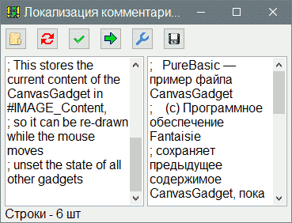
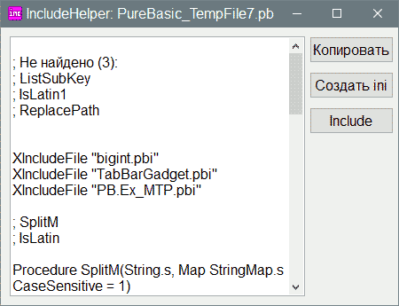
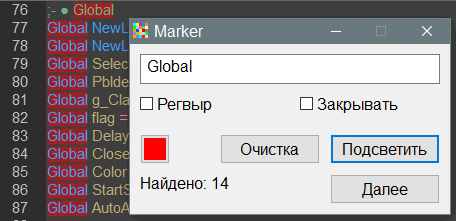
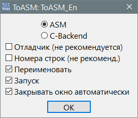

Инструменты PureBasic
В виду того что программы написаны на PureBasic, то для редактора PureBasic создавались инструменты.
CreationGuiPB
Подробнее...
тема на форуме
Code Localization
тема на форуме, а также версия для AutoIt3
Локализация исходников методом поиска текста в кавычках.
Левую часть вставляет программа на основе данных исходника. Правая часть - результат перевода на русский язык левой части в какой нибудь программе переводчике, например QTranslate. Число строк левой и правой части должно быть одинаковым. Если в левой части захвачены строки не являющиеся необходимыми для перевода, то удалить их и нажать галочку (кнопка 3). Кнопка стрелка (4) выполняет обработку и помещает результат в буфер обмена.

CommentLocalization
тема на форуме, а также универсальная версия
Локализация комментариев в исходниках методом поиска текста комментариев после точки с запятой.
Выполняет то же что и предыдущая (Code Localization), но с разницей что переводит комментарии.

IncludeHelper
тема на форуме
Помогает найти инклуды и функции, чтобы вставить в код.

no_comment
тема на форуме
Удаляет комментарии в коде. Удобно удалять из примеров в справке, где часто бывает переизбыток комментариев предназначенных для новичков.
Tidy
тема на форуме
Добавляет пробелы вокруг операторов и в перечислениях параметров процедуры.
get_local
тема на форуме
Захватывает переменные в функции, чтобы создать строку объявления переменных.
Variable renaming
тема на форуме
Захватывает переменные с подсчётом их числа, и позволяет их переименовать, заменив все схождения в коде.
Marker
тема на форуме
Подсвечивает выделенный текст или используя регулярное выражение.

CompareSources
тема на форуме
Сравнение исходников во внешней программе.
ToASM
тема на форуме
Генерирцует ASM или C-Backend код исходника.

WinInfo
тема на форуме
Выдаёт информацию об окне.
 PureBasic
PureBasic